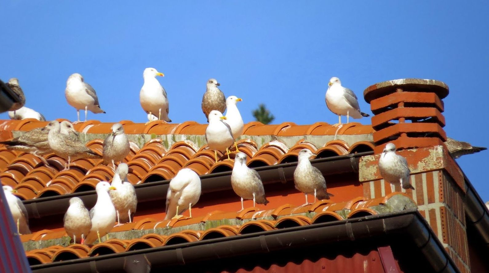

Los pájaros tienen como preferencia vivir en las copas de los árboles, en las ramas más altas y sobre todo si estas tienen bastantes hojas, ya que son una defensa perfecta para sus depredadores, ya que estas le ayudan a camuflarse mejor. También es habitual encontrárselas en los tejados de las viviendas, o en ciertos huecos a los que no va a tener acceso el humano o cualquier otro atacante. Estas aves van a crear sus nidos a base de ramitas que irán colocando y dándole forma, además también de otros materiales como hojas, piedrecitas y su propia saliva, que va a funcionar a modo de pegamento entre todo, para darle una mayor resistencia y conseguir que sea un hogar seguro y caliente, con el fin de que cuando las crías nazcan, tener un buen lugar en el que crezcan.
